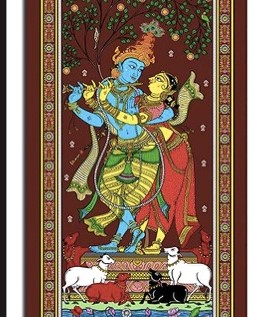

4. Pattachitra Painting

Hailing from Orissa, Pattachitra folk painting is one of the earliest forms of art that originated during the 8th century. As the name suggests, ‘Patta’ means ‘clothing’ and ‘chitra’ stands for paintings, this art form encompasses the pictures painted on a cloth base. Inspired by the Jagannath and Vaishnava cult, the depictions of Pattachitra art can be seen in the famous Konark Temple in Orissa.